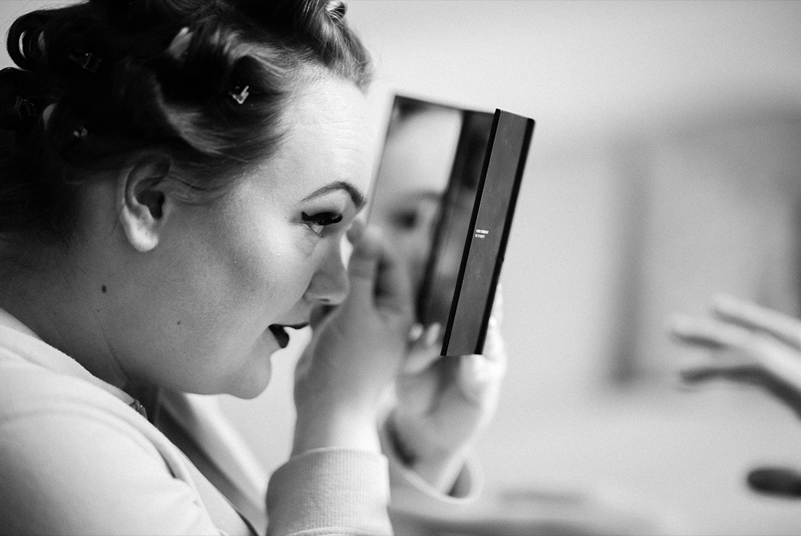

MEET A PRO
Shooting an astronomical event with Samyang’s 14/2.4 XP

Catching memories – a guide for authentic photography
Did you ever ask yourself which photographs are the most valuable ones for friends, family or clients? I guess nobody will say that it´s an image with an iconic landscape or a super posed wedding photograph where everyone is looking nice.
The most valuable photographs are those, which transport emotions and will set the viewer back into that moment again. Such a moment will engage your empathy and is creating a feeling inside you. It´s a photograph that you will look at again and again… a keeper!
I shoot weddings since 2014 and the one thing that I never liked is that at most weddings everything is kind of staged and about perfection. Even if everybody want´s them to be perfect - no wedding is perfect, no human being is perfect, even life ain´t perfect. I´m glad that all of my customers want authentic photographs and they love images with true moments.
In todays article I´d like to show you how to get those photographs onto your camera sensor.
I will show you some rules and how you should act around your customers or subjects. You can adapt these techniques for any kind of documentary photography and I am sure that these rules will provide you and your clients with great results.
Rule #1 It´s about them – not about you
This might be the most essential rule, and we photographers often tend to forget that . When I pick up my camera I am an other person. I am more confident, I know that everyone will look at me and follow my instructions – or at least wait for instructions. Always be aware, that the subject in front of the camera is the important one. Not the one behind it.
No one can be themself, if the photographer performes a one-man-show and acts like a diva. And yes – I have seen such situations. So always be aware that you are performing a service and that you always need to go that extra mile to get authentic images.
Eg. if you do a couples shooting session, let them know, that they can do what ever they want and that they shall look at each other, not the camera -that they should have fun and see the session as a perfect moment of spending time together. It´s their quality-time. I also tell my couples, that I only will give them minimal instructions („Please move over there – lighting is much better in that spot“) and that I won´t pose them in any awkward positions. I let them be theirselves and so should you.
Tell them that they should not worry if they blink or talk and just act naturally. Most couples will forget that there is a camera pointed at them within the first ten minutes.
Rule #2 Get to know and like each other
Most people tend to be intimidated when you point a camera at them. Especially when they don´t know you. Always try to get to know your subject and let the subject get to know you, too. Chemistry between people is really one of the most important things in photography. If your subject doesn´t like you or you don´t like your subject, it will be way harder to get the photographs you want.
This part is really hard for photographers who run a business and can´t reject couples that „don´t fit“ because they have to pay bills. I always insist on meeting a person I am going to shoot first.
Talk to your subject. It will help them to get more comfortable when you are there, armed with a camera. Any smalltalk and joking is good but please don´t be that photographer who will run a one-man standup-comedy-show (remember rule number one?).

Rule #3 Don´t interfere in situations
That rule is the most hard one to get by as a photographer, as we tend to reposition
people or stuff in rooms a lot.
If you want it to be authentic, let it be authentic. Don´t move furniture around – just
work with it.
As i would never interfere with a wedding ceremony (would you?), I don´t tidy up rooms
if I shoot getting readys. I´ve had rooms with clothes lying on the ground – another
bride ordered french fries, which ended up standing on a desk. All that situations are
perfect for authentic moments. I´m sure that these two brides will have some flashbacks
into these situations when they look at these photographs.
Rule #4 Get close but be stealthy like a ninja
When your subjects are familiar with you and there is no emotional barrier
between you (rule number two) they automatically will allow you to get really
close to them.
Why close? Well you could always use a telephoto lens but you will never get the
look and the emotions on camera as if you are at close distance with them in
that moment. I tend to stay very close when I take documentary photographs. I
mainly use a 35mm or 50mm lens.
Being close will trigger your own empathy and will help you notice important
scenery better. And yes, I´ve had moments when I had tears in my eyes at a
wedding and thought „what a wonderful instant this is.“
When you are close to your subjects, use the silent mode of your camera, use a
small lens and try to be overseen by the people. Always be friendly, don´t get
hectic or move too fast.
But don´t be like glue! Know when it´s time to stay back and never, really never be
obtrusive in any way!
Also, never use flash when you are close – since not only it will be quite obtrusive,
but it will give total awareness to everybody that you are close.
The ultimate goal is that people will say: “When did you take that picture? I didn´t
even notice that you were there!“